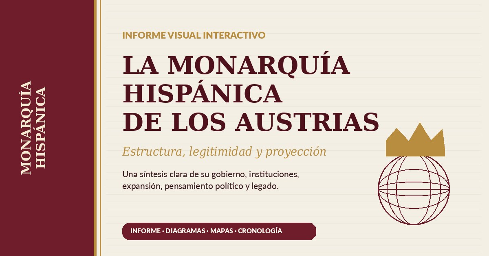

Unidad personal
El mismo soberano reunía títulos diferentes y gobernaba cada territorio conforme a obligaciones y procedimientos particulares.
Informe de síntesis · Siglos XVI y XVII
Estructura, legitimidad y proyección
Una lectura ordenada de la Monarquía como unión de reinos, jurisdicciones y territorios: su fundamento político, sus instituciones de gobierno, la expansión global, el pensamiento jurídico y las tensiones que acompañaron su conservación.

Navegación interactiva
Selecciona una pestaña. Cada bloque se mantiene oculto hasta pulsarlo y contiene desplegables, diagramas y cuadros de síntesis.
La información aparecerá aquí sin recargar la página.
Visión de conjunto
La Monarquía Hispánica fue una unión dinástica y jurisdiccional de coronas, reinos, provincias y territorios que conservaron leyes, fiscalidad, tribunales y tradiciones propias. Su unidad dependía de articular la diversidad alrededor del monarca.
El mismo soberano reunía títulos diferentes y gobernaba cada territorio conforme a obligaciones y procedimientos particulares.
Fueros, privilegios, Cortes, audiencias y jurisdicciones limitaban la uniformidad y obligaban a negociar la aplicación del poder.
Europa, el Mediterráneo, el Atlántico y las Indias convirtieron el gobierno en una empresa de escala intercontinental.
Porque no existía una única constitución para todos los dominios. Castilla, la Corona de Aragón, Italia, Flandes, Portugal y las Indias se vinculaban a la Corona mediante títulos y regímenes diferentes. La unidad era política y dinástica, no administrativa en sentido moderno.
La Casa de Austria, la persona del rey, la religión católica, la administración de justicia, las redes de servicio, la corte, la diplomacia y la defensa común actuaban como vínculos superpuestos.
Adquirió un peso especial por población, capacidad fiscal, proximidad a la corte y disponibilidad de recursos. Esa centralidad sostuvo gran parte de la acción exterior, pero también generó desequilibrios en el reparto de cargas.
Estructura territorial
El sistema no funcionaba como una pirámide perfectamente centralizada, sino como una red de centros, consejos, virreinatos, gobernadores y élites que conectaban la decisión regia con realidades territoriales muy diferentes.
| Espacio | Rasgo institucional | Vínculo con la Corona | Tensión principal |
|---|---|---|---|
| Castilla | Consejos, Cortes y amplia capacidad fiscal | Base administrativa y financiera | Concentración de cargas |
| Corona de Aragón | Pluralidad de reinos, fueros y pactismo | Juramento y respeto a derechos propios | Resistencia a la homogeneización |
| Italia | Virreinatos y gobernaciones | Defensa estratégica y administración territorial | Distancia y rivalidades europeas |
| Flandes | Provincias y privilegios consolidados | Herencia dinástica borgoñona | Conflicto político, fiscal y confesional |
| Portugal | Corona e imperio propios | Unión dinástica con preservación institucional | Equilibrio entre integración y autonomía |
| Indias | Consejo, audiencias, virreinatos y legislación específica | Soberanía de la Corona de Castilla | Distancia, legitimidad y protección del indígena |
Castellana: letrados, consejos, fiscalidad e impulso atlántico. Aragonesa y mediterránea: reinos diferenciados y virreinatos. Borgoñona: etiqueta, casa y cultura dinástica. Habsbúrgica: dimensión imperial. Americana: problemas jurídicos y administrativos inéditos.
Autoridad y administración
Carlos V y Felipe II compartieron la obligación de preservar una herencia compleja, pero representaron dos estilos de ejercicio del poder: movilidad, presencia militar y negociación directa en el primero; consulta, despacho y control documental en el segundo.
Estilo: viajero, militar y dinástico.
Problema: convertir una herencia excepcional en una estructura política duradera.
Clave: dinastía, defensa de la fe, búsqueda de orden cristiano y explicación doctrinal de sus decisiones.
Estilo: sedentario, documental y burocrático.
Problema: controlar una monarquía más extensa y compleja desde un centro estable.
Clave: consultas, juntas, secretarios, corte y supervisión personal del expediente.
El rey aspiraba a decidir en última instancia, pero su poder estaba encuadrado por la ley natural, el bien común, los fueros, los privilegios, los juramentos y los procedimientos de consulta y justicia. La capacidad real dependía también de recursos, información y cooperación territorial.
La complejidad favoreció una administración profesional basada en conocimiento jurídico, escritura y archivo. Los letrados transformaban la voluntad política en consultas, normas y sentencias; los secretarios controlaban flujos de información y acceso al monarca.
Escala imperial
La Monarquía se desenvolvió en varios escenarios simultáneos. La defensa de territorios dispersos exigió diplomacia, ejércitos permanentes, armadas, fortificaciones, crédito y una movilización fiscal extraordinaria.
Rivalidad con Francia, conflictos en el Imperio y defensa de los Países Bajos.
Presión otomana, defensa costera, Malta, Lepanto y control de rutas.
Flotas, comunicaciones oceánicas, rivalidades navales y protección del comercio.
Incorporación territorial, gobierno a distancia y creación de un orden jurídico específico.
Representación cualitativa basada en las conclusiones del informe; no expresa una medición estadística.
La expansión obligó a discutir títulos de dominio, naturaleza de los pueblos indígenas y condiciones de una guerra justa. Consejo de Indias, audiencias, virreinatos y recopilaciones legislativas construyeron una administración específica.
Portugal ilustra una incorporación negociada que conservó leyes, moneda, administración y espacio imperial propios. Flandes muestra los límites del modelo cuando confluyeron privilegios territoriales, presión fiscal, distancia y fractura confesional.
Las empresas militares superaban los ingresos ordinarios. La Corona recurrió a servicios votados, impuestos castellanos, metales americanos y crédito de banqueros. La capacidad de movilización fue extraordinaria, pero también lo fueron el endeudamiento, los retrasos y las suspensiones de pagos.
La profesionalización de los Tercios, la difusión de armas de fuego, la logística y las fortificaciones reforzaron la capacidad militar. A cambio, la defensa permanente elevó los costes y vinculó estrechamente guerra, fiscalidad y administración.
Ideas y legitimidad
Los textos analizados presentan una cultura política que no se limita a exaltar al príncipe. Reflexiona sobre el origen del poder, sus fines, el consentimiento, el derecho de resistencia, la guerra justa y la condición jurídica de los habitantes de los nuevos territorios.
Ofreció un lenguaje de paz cristiana, educación del príncipe y explicación moral de la política carolina, adaptado a los problemas concretos de la Monarquía.
Vitoria, Suárez y otros autores abordaron soberanía, comunidad, ley, comercio, guerra y derechos de los pueblos con una proyección que excedió el ámbito hispánico.
La reflexión política discutió cómo conservar la Monarquía sin convertir la eficacia en una autorización para actuar al margen de la moral y la religión.
La legislación y la doctrina avanzaron hacia el reconocimiento del indígena como persona libre y vasallo de la Corona. La práctica fue conflictiva y desigual, pero la construcción jurídica introdujo límites, obligaciones protectoras y mecanismos de denuncia.
No bastaba la conveniencia política. Era preciso discutir la causa justa, la autoridad competente, la proporcionalidad y el modo de conducir la guerra. La expansión transatlántica convirtió estas cuestiones en un problema central de legitimidad.
Síntesis final
La Monarquía Hispánica fue capaz de coordinar una diversidad extraordinaria durante generaciones. Su duración no se explica solo por la fuerza militar, sino por la negociación institucional, la justicia, el servicio y la adaptación territorial.
Flexibilidad institucional, cultura jurídica, administración letrada, diplomacia, redes de servicio y capacidad de movilización global.
Distancias, lentitud informativa, desigualdad fiscal, endeudamiento, multiplicación de frentes y conflictos entre dirección central y derechos territoriales.
Instituciones de gobierno transoceánico, derecho indiano, reflexión sobre soberanía y derecho de gentes, y una experiencia duradera de articulación política plural.
La Monarquía Hispánica no debe entenderse como un Estado nacional adelantado a su tiempo ni como una simple maquinaria de conquista. Fue una construcción dinástica y jurisdiccional que intentó convertir la diversidad en gobierno. Su grandeza y su fragilidad procedieron de la misma fuente: la ambición de mantener unidos territorios con leyes, intereses y distancias muy diferentes.
Materiales del proyecto
Los tres archivos de la carpeta funcionan con rutas relativas, tanto al abrir el proyecto en local como después de publicarlo en GitHub Pages.
Versión completa, maquetada en A4 y preparada para lectura o descarga.
Abrir informe.pdfImagen JPG de 1200 × 630 píxeles, optimizada para Facebook, LinkedIn y X.
Abrir portada-redes.jpgAcceso directo a YouTube en una pestaña nueva, disponible aunque el reproductor incrustado se bloquee.
Ver vídeo en YouTube| Obra | Aportación principal a la síntesis |
|---|---|
| Autoridad, poder y jurisdicción en la Monarquía Hispánica | Fundamentos jurídicos y filosóficos, Escuela de Salamanca, estatuto del indígena, pactismo, servicio y diplomacia. |
| El pensamiento político del Emperador | Ideario de Carlos V, legitimidad de su acceso, revuelta comunera y erasmismo cortesano. |
| La configuración de la Monarquía Hispánica | Corte, consejos, Cortes, ejército, hacienda, Indias, religión, Portugal, Flandes y proyección cultural. |